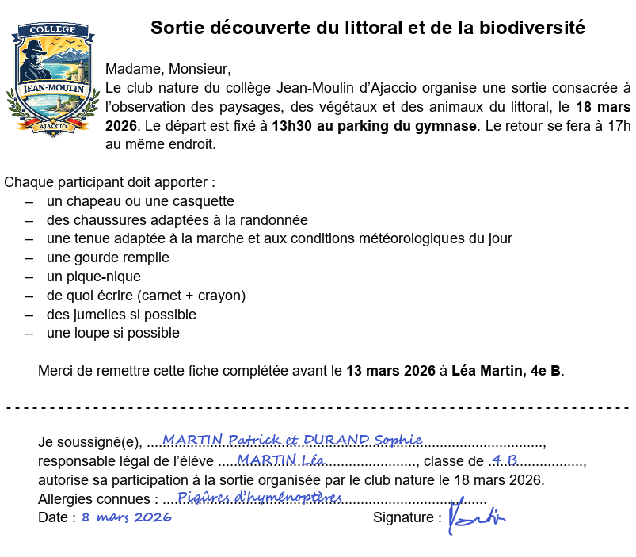

Les types de données
Avant d’envoyer une consigne, un texte, une image ou un document à une IA, il faut examiner toutes les informations qu’ils contiennent. Une donnée peut appartenir à plusieurs catégories.
| Donnée | Condition | Exemples | Dans un prompt |
|---|---|---|---|
| utile | nécessaire pour réaliser la tâche | sujet, niveau scolaire, document à résumer, ... | à transmettre si pas de risque |
| inutile | sans rapport avec la tâche | à éviter pour ne pas brouiller la réponse | |
| personnelle | identifie une personne directement ou indirectement | nom, photo, voix, classe, adresse, immatriculation | à anonymiser avant de transmettre si utile |
| sensible | information particulièrement protégée sur une personne | santé, religion, opinion politique, empreinte digitale | ne pas transmettre |
| confidentielle | accès à un compte, de l’argent, une information privée | Identifiant, mot de passe, numéro bancaire | ne jamais transmettre |
Anonymiser consiste à supprimer ou modifier les informations qui permettent d’identifier directement ou indirectement une personne.
Exercice
-
Exercice débranché : Données, donnez-moi !
- Identifier le type de données dans le prompt et le document joint en utilisant le code suivant :
Donnée
utileDonnée
inutileDonnée
personnelleDonnée
sensibleDonnée
confidentielleU I P S C Je suis Léa Martin, élève de 4eB au collège Jean-Moulin à Ajaccio. À partir du pdf joint, crée une affiche pour annoncer notre sortie du club nature dont je suis présidente. Indique la date, l’heure, le lieu de rendez-vous et le matériel nécessaire. Ajoute mon nom pour préciser que je collecte les inscriptions.

- Réécrire un prompt correct qui transmet les bonnes données.